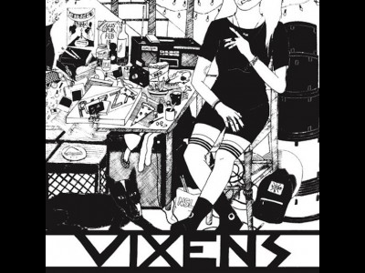

Vixens was an all female hardcore punk band active from 2011-2013. We have an LP released on La Vida Es Un Mus Discos, and a self-released demo tape. We've toured across Eastern and Central Canada, we played our last show with Limp Wrist and Omegas as part of Not Dead Yet festival in Toronto [November 2013].
